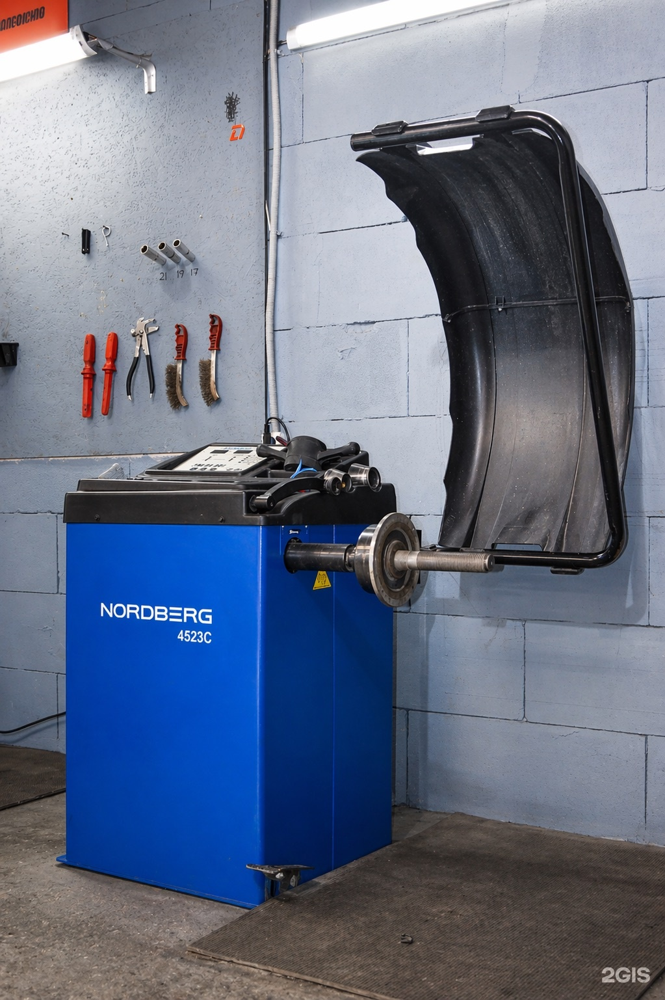
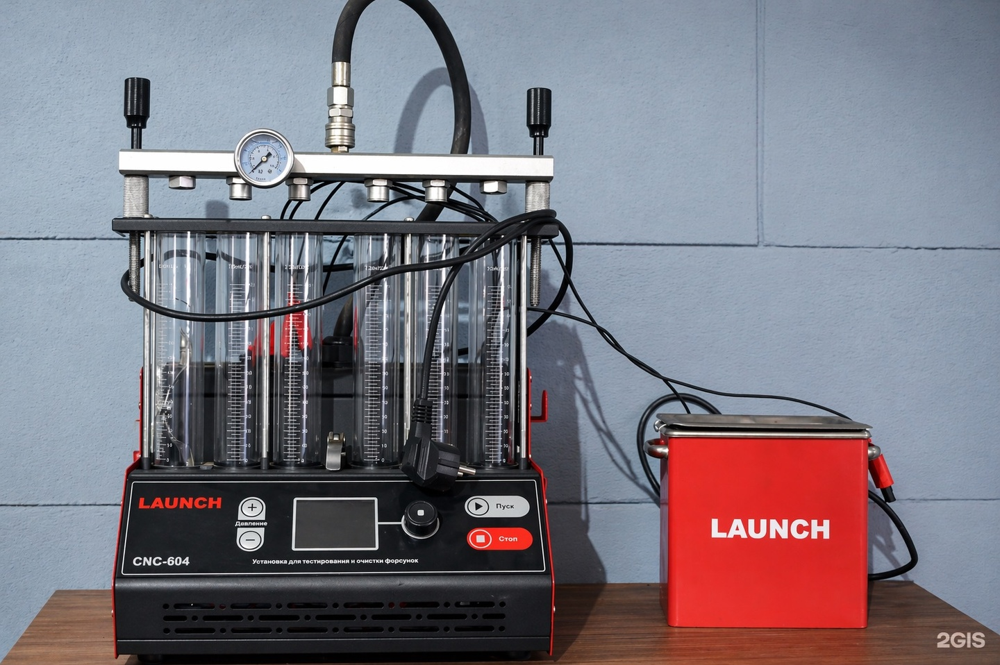

Любятово
Деталика60
Запчасти и аксессуары для автомобиля
+7 (900) 997-60-60ТелефонУточните нужные детали и возможность доставки по телефону.
Адрес
Псков, улица Льва Толстого, 95/1
Часы работы
Пн–Сб 10:00–19:00
Демо-концепт · текущий прайс ещё не подтверждён
Направления
С чем можно обратиться
Доставка
Уточняйте по телефонуПрайс
Услуги и цены
Фотографии
Фотографии из карточки
Фотографии из карточки бизнеса. Снимки не подтверждают актуальность цен.


Отзывы
Что отмечают посетители
Один из посетителей положительно оценивает помощь сотрудников.
Полный отзыв в 2ГИСВ положительном отзыве отмечают сроки получения заказанных деталей.
Полный отзыв в 2ГИСПосетители положительно оценивают понятные объяснения и внимательное общение сотрудников.
Полный отзыв в 2ГИСПересказ субъективных мнений без имён авторов. Полные отзывы — в 2ГИС.
Контакты
Адрес и связь
Часы работы
Пн–Сб 10:00–19:00
Телефон+7 (900) 997-60-60
Уточните нужные запчасти по телефону
Позвонить